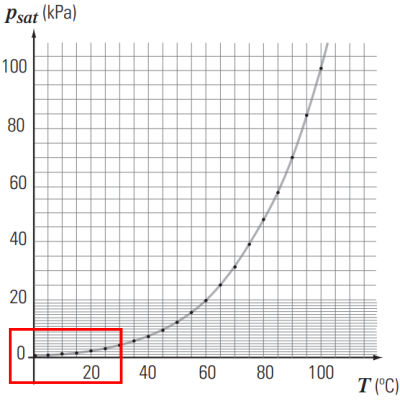
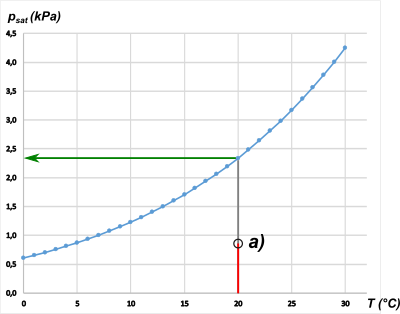
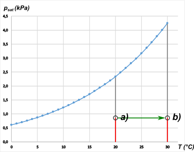
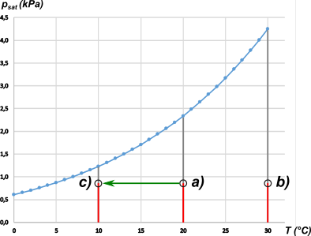
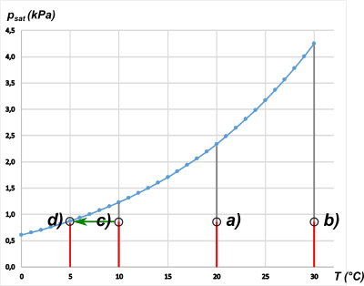

NO ME SALEN
(PROBLEMAS RESUELTOS DE BIOFÍSICA DEL CBC)
FLUIDOS
|
|

|
| |
 |
62 - Una masa de aire que está a 20 °C, tiene una humedad relativa del 37,4 %. |
|
a) En el gráfico pv sat (T), marque el punto que represente el estado del vapor de agua presente en el aire.
b) ¿Cuál es la humedad relativa de la misma masa de aire si se la calienta, a presión de vapor presente constante, hasta una temperatura de 30 °C? Represente esta evolución en el gráfico.
c) ¿A qué temperatura habrá que enfriar la masa de aire, a presión de vapor presente constante, para que la humedad relativa sea del 71 %?
d) ¿Cuál es la temperatura de rocío? |
| Acá tenés el grafico de presión de saturación en función de la temperatura que ya conocés. |
|
|
|  |
|
|
| Pero para resolver el ejercicio, necesitaríamos una ampliación del gráfico, de la parte que te recuadré en rojo. Acá lo tenés. Lo construí en excel con una tabla de presión de saturación de agua en función de la temperatura como la que vos ya conocés, solo que más detallada (grado por grado) entre 0 y 30 grados. |
|
|
|  |
| T ( °C) |
p(kPa) |
| 0,01 |
0,6117 |
| 1 |
0,6571 |
| 2 |
0,7060 |
| 3 |
0,7581 |
| 4 |
0,8136 |
| 5 |
0,8726 |
| 6 |
0,9354 |
| 7 |
1,0021 |
| 8 |
1,0730 |
| 9 |
1,1483 |
| 10 |
1,2282 |
| 11 |
1,3130 |
| 12 |
1,4028 |
| 13 |
1,4981 |
| 14 |
1,5990 |
| 15 |
1,7058 |
| 16 |
1,8188 |
| 17 |
1,9384 |
| 18 |
2,0647 |
| 19 |
2,1983 |
| 20 |
2,3393 |
| 21 |
2,4882 |
| 22 |
2,6453 |
| 23 |
2,8111 |
| 24 |
2,9858 |
| 25 |
3,1699 |
| 26 |
3,3639 |
| 27 |
3,5681 |
| 28 |
3,7831 |
| 29 |
4,0092 |
| 30 |
4,2470 |
|
|
|
¿Cómo hice para localizar al estado indicado en el punto a)? Tracé un segmento vertical en 20 °C. La altura de ese segmento (lo miro en la tabla) vale 2,3393 kPa. Esa sería la máxima humedad posible a esa temperatura, ahí se satura. Pero el enunciado dice que la humedad relativa es de un 37,4%. Entonces, aproximadamente tomé el 37,4% de ese segmento (y lo pinté de rojo). Ahí estaba el punto a) que describe el estado.
Si quiero saber el valor exacto de la presión de vapor de vapor en ese punto, simplemnte hago:
Pvap a) = 0,374 . 2,3393 kPa = 0,8749 kPa
Si a partir del punto a) trazás una recta horizontal, esta va a intersectar a las ordenadas en ese valor.
b) ¿Cuál es la humedad relativa de la misma masa de aire si se la calienta, a presión de vapor presente constante, hasta una temperatura de 30 °C? Represente esta evolución en el gráfico. Acá tenés la evolución, con una flecha verde: |
|
|
|  |
|
|
Ahí podés ver claramente como la misma cantidad de humedad (segmento rojo) ahora representa un porcentaje menor respecto al valor de la saturación (segmento gris, que en la parte de abajo llega hasta el cero aunqye no se ve porque está tapado por el rojo). Para conocer el valor exacto de ese porcentaje basta con dividir el valor de de humedad presentesobre el de la saturación a 30 °C.
Hrel b) = 0,8749 kPa / 4,2470 kPa = 0,206
Ahora podés grabarte en la cabeza que si sube la temperatura, baja la humedad. En este caso, del 37,4% al 20,6%.
c) ¿A qué temperatura habrá que enfriar la masa de aire, a presión de vapor presente constante, para que la humedad relativa sea del 71 %? Acá va esta nueva transformación, con otra flecha verde. |
|
|
|  |
|
|
¿Y cómo supe hasta dónde llegaba la flecha verde? ¿Cómo sé que la temperatura a la que la humedad presente en el aire constituye el 71% de la máxima? Sencillo: me fijo cuál es el valor de humedad cuyo 71% es lo que tengo, los 0,8749 kPa...
0,8749 kPa / 0,71 = 1,2322 kPa
Con ese valor voy a la tabla y encuentro que se trata de la presión de saturación de los 10 °C. Al menos muy cercano a esa temperatura. (Para conocer el valor exacto tendría que tener una tabla mucho más detallada, o saber hacer interpolaciones entre dos temperaturas).
d) ¿Cuál es la temperatura de rocío? La temperatura de rocío es justamente la temperatura en la que una cantidad de humedad, 0,8749 kPa, se halla en la saturación o sea, los valores de la tabla. |
|
|
 |
|
|
| ¿Y cómo hice para conocer esa temperatura? Nuevamente, me fijé en la tabla. Busqué cuál es la temperatura en la que la saturación vale 0,8749 kPa. Ese valor no figuraba, pero hay uno muy próximo, 0,8726 kPa. O sea que para hallar el valor exacto, nuevamemte debería contar con una tabla más detallada o hacer una interpolación. |
|
|
| |
|
|
DESAFÍO: |
|
 |
| |
|
| Algunos derechos reservados.
Se permite su reproducción citando la fuente. Se recomienda fervientemente su lectura en bibliotecas, escuelas, clubes, reuniones de comisión directiva de entidades benéficas y maléficas. Última actualización jul-22. Buenos Aires, Argentina. |
|
|
| | |
|
|